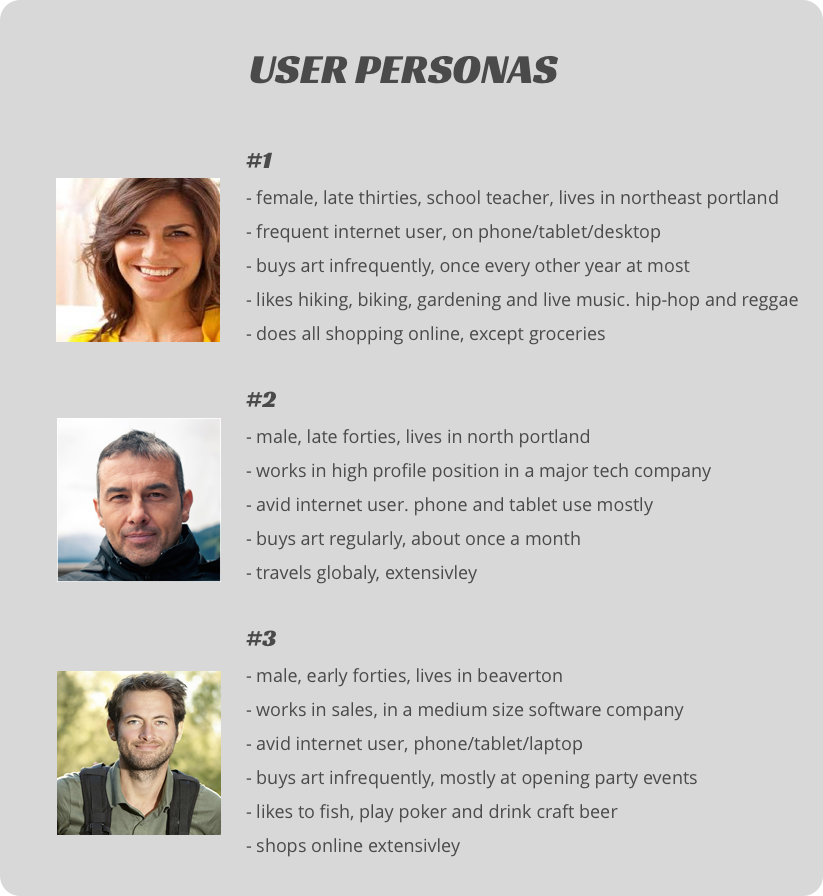
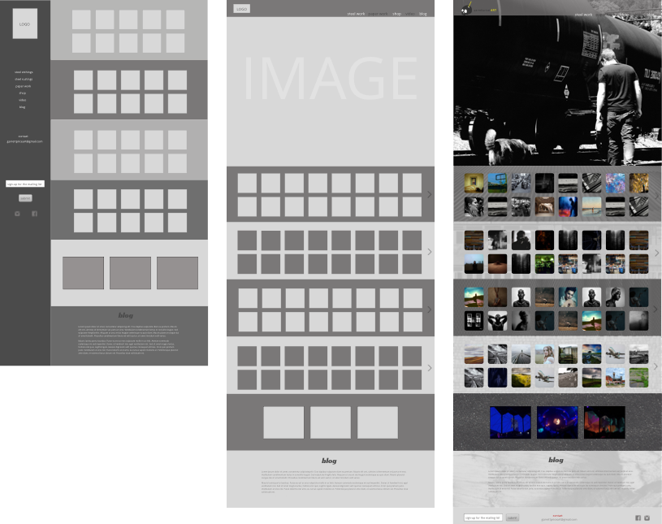
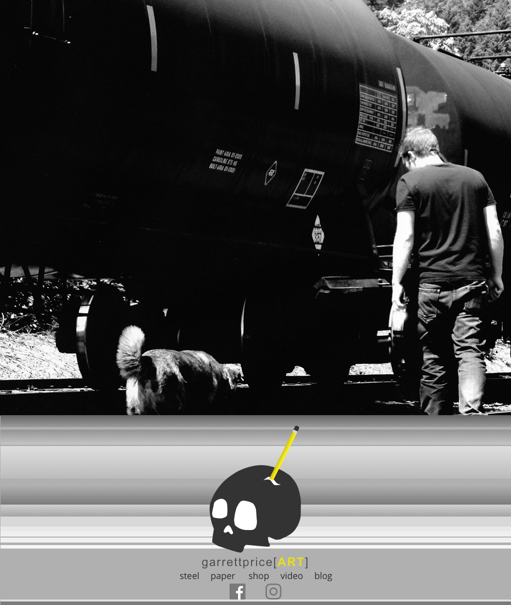
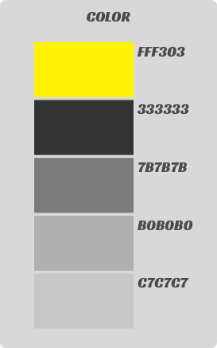

garrettpriceart.com is my fine art portfolio site. Until now, I have relied on friends with web knowledge to create and maintain my site. I've had a hard time getting the design dialed in to the aesthetics that please my own eye. I haven't had the ability to update the site with new art and upcoming show info as frequently as I would like. A few key features were also missing; a store page to purchase artwork directly, and a full gallery of artwork with title info for each work on the gallery.
The primary goals of the re-design are; to present my art in a more visually appealing and interesting way, bring in more visitors with better and more frequently updated content, and increase online art sales.
User personas were created to help define the needs of the site users. A couple of pieces of feedback that I found particularly useful were the types of devices the different users would view the website from. A fully responsive website is one key to this website being successful. Versions for mobile and tablet user are currently in production.
My initial rough designs for the site was a continuous scrolling flow. All of the gallery links,
shop and blog on one page. This design style was too cluttered, so I moved on to a cleaner approach.
The final draft of the site has a large image on the landing page, with navigation links at the bottom of the page.
I created a user flow diagram to map the flow from page to page via clicking the navigation links.

A typography style guide was created. RACING SANS ONE was the choice for headline text for is bold, clean and modern feel. OPEN SANS was chosen for its sleek, easy-to-read, modern feel which lends itself well for small text/body copy.

The color choices were made to lighten the overall tone of the site, while focusing the interest on the gallery images of art. A single color, bright yellow, was used to give contrast to the muted gray tones. The yellow also gives a sense of energy to the color palette.
Pop-out windows were created to give the full size view of the art thumbnails in the galleries. Each full-size view includes title/dimmension/medium info for the piece being viewed. Buy now links are added to the full-size view, and each shop item thumbnail as well.